有些读者希望俺发一篇关于“天堂文件”的《每周转载》。之所以今天没发这个话题，是因为“天堂文件”的内容很庞大（类似于当年的“巴拿马文件”），各国记者把里面的素材整理汇总出来，需要一定的时间。所以今天先聊“携程幼儿园虐童事件”。
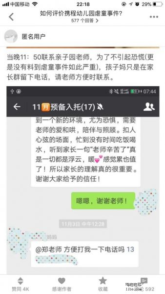
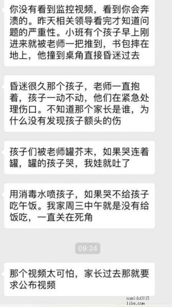
《我们在楼上敲代码，你们他妈的在楼下集体虐我们娃 @ 墙外楼》
（编程随想注：以下是【全文】，为了便于阅读，俺加了一些换行）
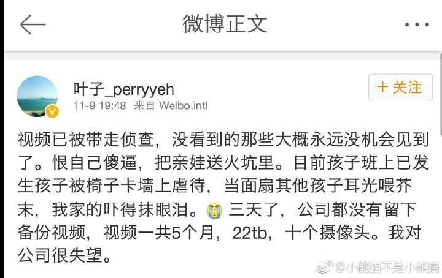

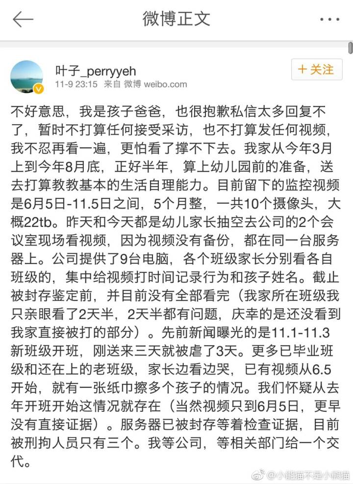
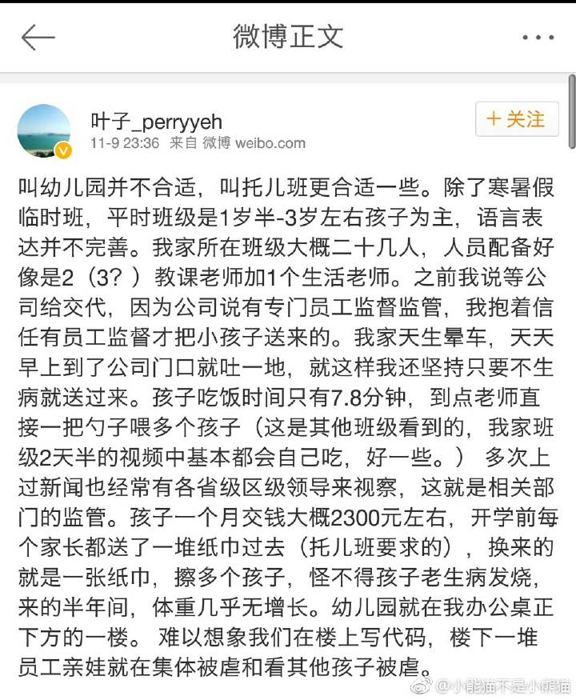
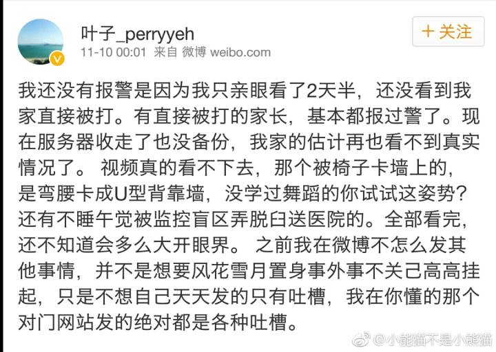
（某携程员工）：
据家长透露，携程亲子园一天只给孩子喝两次水，很多孩子进去前放学后就要去隔壁便利店喝牛奶饮料，本以为是孩子贪甜，没想到都是被渴的。另外，孩子吃饭时间只有七八分钟，到时间就收了孩子的饭给倒掉，很多家长反映上学期间体重无增长。亲子园保育员的行为对孩子的身心健康造成了很大的影响，很多孩子不肯关灯睡觉，说会做噩梦有鬼，半夜惊醒吓得大哭。
（某不知名网友）：
我们team老大的老婆携程的，我刚刚问他。他说他老婆也和他说了这事。这两天班车上大家都在聊~
而且他告诉我，这个托儿所不是所有员工家的宝宝都能上的。他家儿子今年1岁多，他老婆想送去呢，级别太低排不上号，当然现在是很庆幸的。
说是要按照员工对携程的贡献排的，一般要老员工、有点级别的员工、重要部门的员工，才有资格送小朋友去这个托儿所呢~
（编程随想注：考虑到国内视频网站可能会被真理部控制，俺分享了【墙外】YouTube 的视频链接）
禽兽幼师灌小孩芥末、消毒水！虐童曝光！上海携程亲子园虐童事件全纪录
上海携程幼儿园园虐童事件流出最新视频 孩子被绑在椅子上挣扎
【携程虐童案】孩子亲口证实被抹芥末！
（编程想注：下面列出的这些可不是俺瞎掰滴，都可以在网上找到。这么多虐童案，全国各地都有，说明这是【普遍现象】）
2010年：江苏兴化板桥幼儿园，有教师用电熨斗烫伤7名儿童。
2011年：山西西安城东苏王早慧幼儿园，一名4岁男童遭老师用锯割手腕。
2012年：山西太原市蓝天蒙特梭利幼儿园，有女童因不会功课十分钟被打几十个耳光。
2012年：浙江温岭蓝孔雀幼儿园有女教师被揭发有数百张虐童照，包括把小孩扔进垃圾筒、用宽胶带封咀、铁筒罩头的照片、强迫幼童亲吻、幼童跳舞脱裤子等等。
2012年：上海杨浦区某双语幼儿园托班女童下体被放置豆粒。
2013年：河北燕郊幼儿园老师用针扎幼儿、用刀威吓幼儿、逼幼儿喝尿、逼幼儿吃老师鼻屎等众多虐童行为。
2013年：山东济宁市机关幼儿园有教师踢伤孩子生殖器。
2013年：黑龙江双鸭山金宝贝幼儿园，有老师把孩子踢到半米远，并有小孩一日内被重打4次。
2014年：山西西安两所幼儿园被揭发，为了避免幼童生病不上学不交学费，未经家长同意，违规长期给予幼儿服用“病毒灵”。
2016年：河北省文安县一间连锁幼儿园老师，用大头针刺伤及恐吓4名幼儿。
《携程幼儿园虐童事件背后的猫腻 @ 知乎》
（编程随想注：以下是知乎某个答题的节选，粗体是俺标注滴）
《刘易杰：我们花了这么多钱，最后为什么还是被喂芥末的命？ @ 墙外楼》
（编程随想注：以下是此文节选，粗体是俺标注滴）
《有病要读书：虐童事件与信息污染——始于作伪，终于无耻。@ 中国数字时代》
（编程随想注：以下是此文节选，粗体是俺标注滴）
东东枪：
如果看了最近的幼儿园虐童事件之后你的看法是“政府应该加强监管，不要让随便什么人都能开幼儿园托儿所”，那你真该去读点经济学了。
事实上，携程的老板梁建章前些天刚写了篇文章谈《中国为什么缺少托儿所》，他提到的一个重要原因就是所谓“资质审核”太过严格。
企业本可按自己的想法办符合员工需求的托儿所或幼儿园，给员工也给企业解决问题，其他企业也可根据需要提供好的服务。
可偏就因为这“资质审核”，兴办此类机构的许可权终于（甚至是必然）落入了人渣手里。
韩非：
朱恒鹏教授讲过一个逻辑，莆田系医院是医疗过度管制的结果。
因为严格的管制，能拿到批文的，一定是有人脉资源或会钻空子的，大概率是没能力的。
所以长庚在大陆建医院很困难；上海的幼儿早教日托也是这样。
严格管制的结果并不会导致服务质量的提高，只会让和政府有关系的人可以办学，他们往往是最差的。
moreless：
携程托儿所的问题出来以后，有人说要加强监管。
现在不是没有监管的问题，而正是监管部门权力太大，权力没有有效监督，权力寻租的问题。
这种情况下越加强监管问题越多。
马伯庸：
这种企业出钱、主管部门审核资质、指定主管部门关系供应商提供服务的模式，见过太多。
层层进贡，层层克扣，到末端基本上没剩多少了。
虐童这事到底谁的锅，只要查一下携程一共投入多少钱，再看阿姨多少钱招聘进来的，就一目了然了。
大盗贼霍老爷：
携程办亲子园，开办一周被叫停了，然后长宁区妇联推荐了这个为了孩子学苑，为了孩子学苑是现代家庭杂志社读者服务部，现代家庭杂志社股权 100% 归上海妇联，关键是“为了孩子学苑”也没有办学资质，呵呵。
企业没有办学资质7天叫停，自己没有办学资质办了一年多，如果不是出事，还能办下去。你感受一下。
墙外楼：
国家一边骗你们生二胎，一边不给幼儿教育政策扶持和补助。
企业挣扎个自办示范幼儿园，妇联还要在里面抽点水，最后只肯出3000招人，自然只能请到小太妹当老师；
自个儿的人格缺陷都没搞定呢，再管爱闹腾的孩子，能不出事儿？
生，好好生，生出来今后都去喝芥末消毒水。
凌富贵：
该管事的时候装聋作哑，要好处的时候争先恐后。
——我是说众多职能部门，不仅仅是指某地妇联。
《西雅图雷尼尔：无资质的关联企业为何被推荐？上海妇联请出来走几步 @ 墙外楼》
（编程随想注：以下是此文节选，粗体是俺标注滴）
《我也来八一八携程亲子园 @ 墙外楼》
（编程随想注：以下是此文节选，粗体是俺标注滴）
《携程亲子园虐童背后最该道歉的难道不是上海妇联？ @ 网易》
（编程随想注：以下是此文节选，粗体是俺标注滴）
《携程副总裁施琦：虐童是长期行为 以后不与妇联合作 @ 新浪》
禾禾木：
三八红旗手张葆葆，名下8家公司 …拿着NGO的钱 (纳税人的钱或捐款)，用政府名义推荐企业采购自己项目，又用NGO的名义合理避税！
她和上海长宁区妇联是什么关系？
她丈夫是谁？
除了携程亲子园其他家的亲子园有无虐童事件？
这个女的已经是老惯犯，办立英语培训班卷款逃跑。
难道没有大V深挖吗？！
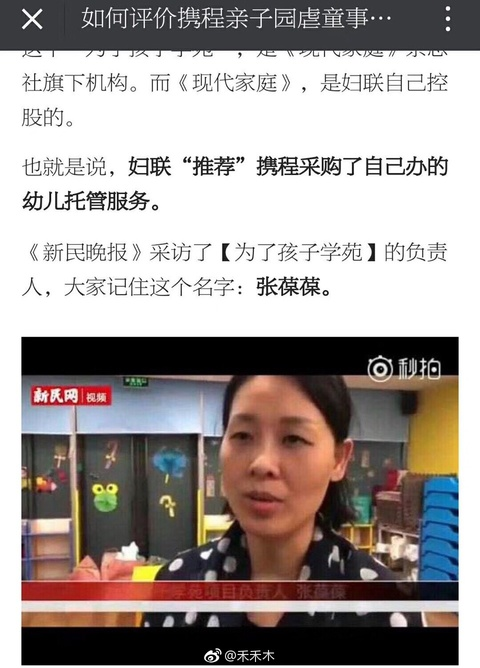
知乎问题：
如何评价携程亲子园虐童事件？
任易回答：
真相，就藏在为了孩子学苑负责人、锦霞儿童益智服务中心理事长、上海锦霞教育信息咨询有限公司创始人、上海童领企业管理有限公司董事长、宝贝创意谷创始人——张葆葆的身后。
月光博客：
携程幼儿园虐童事件的罪魁祸首是妇联。
携程几年前就筹办职工托儿所，被政府叫停；之后长宁区妇联向携程“推荐”了自己办的幼儿托管机构，携程托儿所才重新开张。
因此，事件的源头是妇联，妇联的负责人应该为这次恶性事件承担责任。http://t.cn/RljtP4T
刘沙沙：
这次上海妇联垄断幼儿园，虐待孩子这事儿，也是刷新了我的三观。我特么对中国这些权力机构收过路费的手段真的是佩服的五体投地。携程本来自己搞幼儿园，被妇联叫停了，说没牌照不许搞，然后妇联给塞进来个自己办的
https://t.co/Vw2c9t15wr
五岳散人：
看了看携程幼儿园虐童那事儿，虽说我公开怼过携程，但这次的锅还真不能全是携程背。
您看，携程想自己办幼儿园方便员工，算是员工福利的一种，结果没几天就因为没有资质而停了，然后就是找了个“第三方服务”。
这个服务是上海妇联下属某个杂志社的下属读者服务部的下属三产办的。
这事儿出来我就奇怪...
程凌虚：
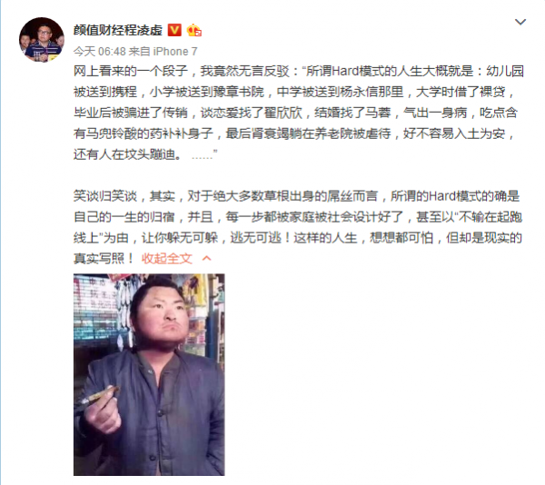
《作家天佑：我们的人生为什么会进入Hard模式？ @ 中国数字时代》
（编程随想注：这篇是对上面那条微博的有感而发）
《蕨代霜蛟：携程、妇联。响当当的牌子、烂渣渣的作为。WHY？ @ 墙外楼》
携程创始人梁建章：
（携程）公司的中高层，现在基本上是没有安全感的，小孩都往外（美国）送，自己能弄一个护照去弄一个护照。
当然特别穷的人顾不上这个，他们能在上海买个房就好。
中国的学校、教育、医院、空气，都没有（美国）那么好。
（某不知名网友）：
携程事件，很像杭州保姆纵火案的另一个版本，都狠狠撞到了一线中产的焦虑感上。
作为安全感最弱的阶层，房产、子女、医疗、教育、食品、养老都是不安全感外延的痛点。
这两年的百度魏则西事件、常州外语学校毒操场、山东疫苗案、杭州保姆纵火案、携程亲子园，无一例外。
（某不知名网友）：
朋友圈看了携程亲子园的事情，有点震惊。
最震惊我的部分不是虐待过程有多么残忍，而是有多么难以发现孩子被虐待。
如果不留下任何外伤，或没有监控佐证，恐怕永远也不知道小孩遭受了什么。
这是比人肉炸弹更恐怖的恐怖主义，同时也是你国的日常。
这些孩子都会长大，若无其事的长大。
倪妮不是我：
携程幼儿园这事儿一出来，又有一群人装外宾了，好像某国从来没有虐童、三聚氰胺、地震豆腐渣的事情似的。
岁月静好的中产们，出来走两步啊。
什么坏事都轮不到你头上，因为你姓赵对吧？
Lebutong：
给你国人中产写首歌：
常怀感恩岁月静好，升旗阅兵热泪盈眶；
身后有个强大祖国，勿负时代享受人生：
北上广深远超欧美，一线城市直追日韩；
九九六是勤劳致富，奴隶论乃挑拨离间。
奶粉有毒我去海淘，疫苗过期仅限农村；
虐童就上国际学校，保姆顽劣可请菲佣；
晋宁泸州地处偏僻，领导先走那是当年……
Sephiroth：
托儿所给你孩子喂安眠药
幼儿园给你孩子喂芥末
上学给你孩子喂“各种先进思想”
出来工作给你孩子喂“借债啃老必须买房”
而立之年给家喂“必须油腻的生个二胎三胎”
干不动了给你喂“延后退休，站岗干到死”
到老了给你喂“养老不能靠政府”
一辈子发现做了个别人给你喂的梦，这就是在圈里等着喂的国人！
Jian Alan Huang：
贵支的幼儿园虐待儿童是很有必要的。
生在贵支的小朋友从幼儿园就开始被虐，这样长大以后才能更快更好地适应社会。
为了不让孩子输在起跑线上，强烈建议贵支父母把小朋友送到携程幼儿园。
麒哥：
【活活弄死你】
教育弄不穷你，医疗弄；
医疗弄不穷你，房贷弄；
房贷弄不穷你，车贷弄；
车贷弄不穷你，加税弄；
加税弄不穷你，通胀弄；
通胀弄不穷你，养老弄；
养老弄不穷你，放开二胎弄；
放开二胎弄不穷你，退休继续交费弄；
继续交费弄不穷你，死后墓地高价弄。
目的只有一个，永远不让你有闲钱。
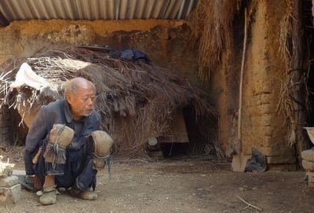
响马：
携程幼儿园这事是这国最让我失望的一件事情，没有之一。
不抱任何希望了，失望透顶，不再说。
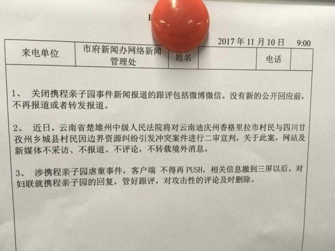
蓝一枚：
@携程旅行网 你是怎么做到“在微信说携程虐童只有自己能看到”这个事儿的。
@午后狂睡_Silent 你觉得呢？真这么牛逼？？
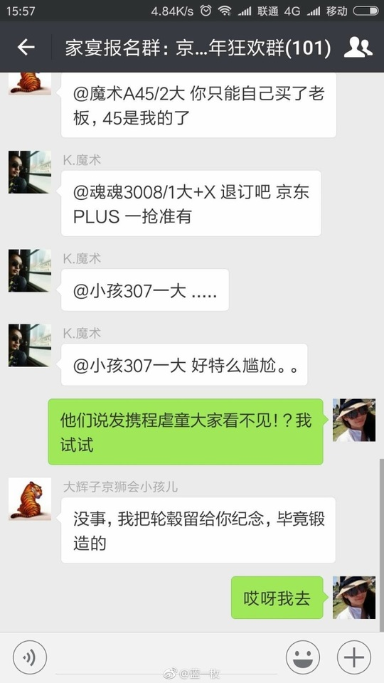 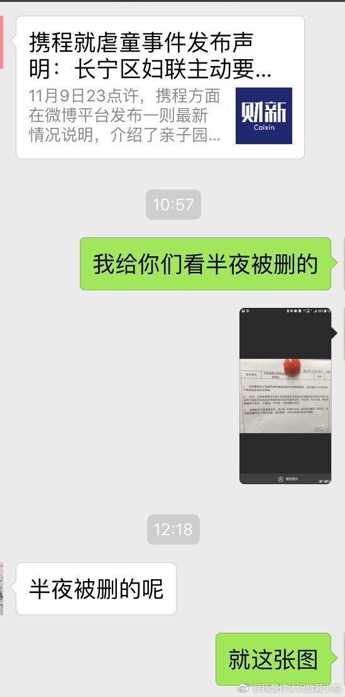 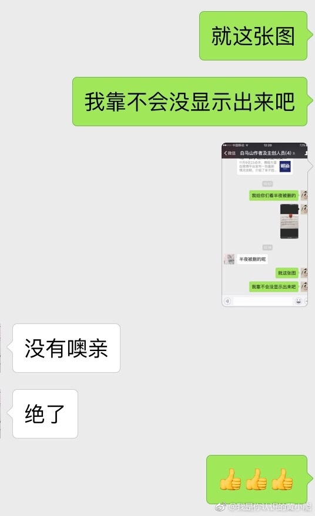
鲁特：
携程幼儿园的事居然还封杀，微博上不了热搜很正常，知乎居然都删帖。
全国经济最发达的地方出了这种事都想压下去，妇联什么时候这么牛b了？
吃枣药丸
Her peirong：
可见，携程当时对和妇联的合作是满意和充分信任的。当时多信任，现在就多恐怖！
所以小粉红爱党爱国，不是坏事。携程幼儿园事件告诉我们，党妈专坑信任它的人。这点初心，党妈从未遗忘，一直坚守！
《携程内部信通报虐童案进展——主要责任人已被刑拘 @ 新浪》
（编程随想注：携程内部处罚了一些人，算是有个交代。至于【上海市妇联】，当然是毫发未伤，继续开亲子园，继续赚黑心钱）
《龅牙赵：水泊梁山办了个托儿所 @ 中国数字时代》
（编程随想注：此文源发于微信，已经被疼逊管理员和谐掉了）
医生妈妈欧茜：
【孩子可能遭受虐待或冷暴力的简洁核查列表】
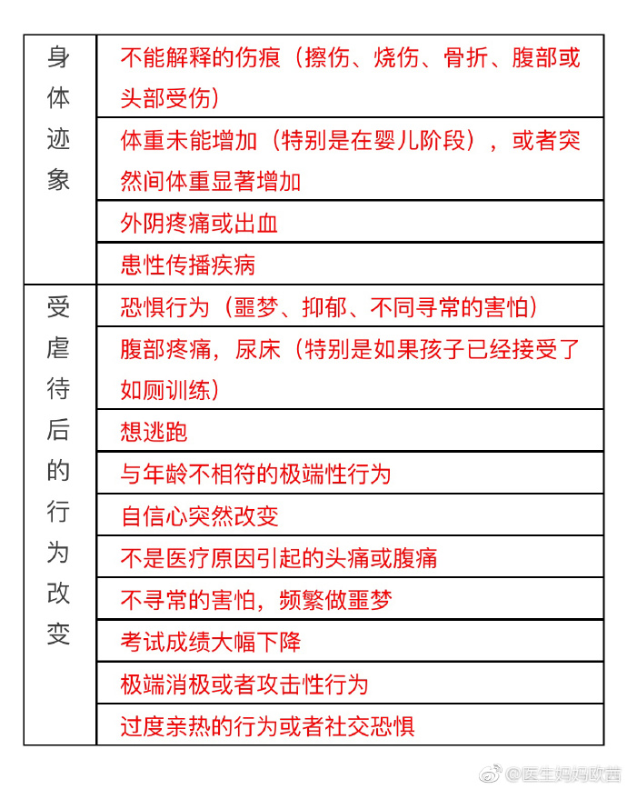
俺博客上，和本文相关的帖子（需翻墙）：
《每周转载：幼儿园集体服药事件和相关抗议活动（网文若干，照片多张）》
《每周转载：超级富豪王振华性侵9岁女童（大量网友评论，多图）》
《每周转载：汇总未成年人被性侵被嫖宿的案件（38起，附图）》
《点评中国社会九大阶层——没有公平、难以流动、无法稳定》
★被虐儿童家长的哭诉
《我们在楼上敲代码，你们他妈的在楼下集体虐我们娃 @ 墙外楼》
（编程随想注：以下是【全文】，为了便于阅读，俺加了一些换行）
又失眠了，干脆我来梳理下。
16年初第一期开班，十分火爆，要排队等入园，当时有副总裁级别的孩子都打好不容易有名额。同事家从第一期进去了，反馈还不错，说学会上厕所啦（当时2周岁多），背诗啦，孩子也经常到工位上玩耍，我也天天从托儿班门口路过，一切看起来都那么不错。
今年我家要上幼儿园了，生活自理比较欠缺也腼腆，怕不习惯，想家附近看看有没有时托。去看了几个不太满意，又问了几个同事楼下怎么样，说还可以。
于是我这个“后爹”就带半小时车程都会晕车的娃，每天早上来公司。多少次娃一下车就吐，我都忍了。之前也咨询过娃，认识班里小盆友吗？叫的出其他小盆友名字吗？喜欢那里吗？有其他小朋友打你吗？老师打了吗？明天还要来吗？除了开始哭闹不来，其他多数时候接的时候非常开心，去托儿班就有点不情愿但还是自己背包进去了。
我就没有多想，真没有多想。这是第一个娃也没想过二胎。中间不是没有异常情况，比如连续发高烧，有一个月只去了大概十天剩下全请假。有几次在家里说话声音大了点，娃就吓得尿裤子，我和老婆以为是我们声音太大吓到孩子了还互相责备。7.8月份有一次我去接发现娃下嘴唇破皮外露流血，郑姓园长看见我主动说：今天学跳舞转圈，没收住磕地上了。我也表示理解没多说什么，出来后我还问过：有被打吗？说没有。
我就真放心了，直到8月底离开，开了毕业典礼，送了证书。证书上孩子笑得特别灿烂。
上面是前提。
11月1日
新班开学。
11月3日
就是那位追求真相的家长，发现才送过来第三天的（孩子）耳朵异常，于是开始问郑姓园长。
微信截图我相信很多人看过，（郑姓园长）不容置疑的口吻反过来教育。
周一，11月6日
这位家长来园沟通。郑园长百般推脱责任，家长气不过要求公司介入。
视频怎么得到的我也不清楚，反正是看到了真相，家属晕厥。
网上流传的家属哭诉，黄衣服下跪视频，我不清楚是周二早上还是周三早上发生的。
我家的已毕业，没有收到任何通知去参加该沟通会，到目前为止也没有，所有消息都是同事转我和集体群里聊出来的。
周三，11月8日
早上9点，我收到了同事转我的楼下视频。非常震惊，同时好奇：其他班呢？随着上班，其他同事的消息陆续传来… 跟着外部朋友也纷纷问我。
下午三点左右，别人告知我，才知道可以看视频了。当时我在工作，推算了一下一般视频也就三个月了不得，我家的估计看不了啥就没去。
五点多去现场，当时开了一个会议室，6台电脑。会议室里乱糟糟的，没有负责人，不知道问谁。一堆家长看到被虐的就忍不住哭，回放，手机录像。
后来又开了一个会议室，加了三台电脑。服务器只有一个，卡的不行。当时就问现场it人员，能多开点吗。说不行了，服务器撑不住了。也有人发纸笔，说记录时间点和虐待情况，孩子姓名作为证据提交。
人非常多，抢不到机器。中间有警察到场，要求带走封存查证。现场都是围观看视频的家长，警察未能带走。
我提出质疑：问这里有负责人吗？说没有。问IT：为什么不备份呢？说备份要停机，现在都是看得停不了，视频太大了。问半夜可以吗？答不出。
这是周三晚上。我好不容易抢机器看了6月5日，有视频的第一天。发现中午吃饭好一张纸巾擦多个小孩，其他没发现虐待。
心里松了一口气，看来可能真是个别，2小时才看了一天，回家。
周四，11月9日
中午我继续去看，发现8月底孩子少，有合班情况。我家的被合到其他班，吃饭前我家的看着别的孩子被扇耳光喂芥末，偷偷摸眼泪。有其他老师在场，视而不见。
下班后继续看，发现了8月初同班上有孩子弯腰成u型，背靠墙上被椅子卡着腿，持续数分钟。你们自己感受这个姿势。期间多位其他老师在场，视而不见。
那个一个捆孩子在凳子上，2个围观，我都不记得是哪个班了，看到的家长又是哭成一团。
之后不久，警察到场，高层级别不详的安慰说警察要拷走视频，暂停观看。现场一片乱，经过追问，才知是要拿走封存查证，并不是拷贝，要带走服务器。
现场态度都不好，靠对吼才能说上话。我吼了几下，差点被警察要求带去出去。警察和高层各种承诺相信公司相信xx，等拿纸要求签名画押，没人肯写了。
有员工站出，既然不肯画押，那么要求ceo到场。先vp级别的到场，期间我们要求公司先备份再拿走，被拒。问为啥三天没备份，回答不出。
鉴于来的警察据说层级高，服务器拿走了。
后ceo来了，很多人都拍了视频。大伙也总结了几条初步要求。
主要的：
1.每天中午12点，ceo到场沟通情况进展。
2.公司组成专责小组，ceo为组长。
3.公布负责监督托儿班的员工，离职也算
4.通知所有在上过的家长
好像还有一条 公布所有园里任职过的员工。
不报警的都在等着看视频拿实锤。
拿到实锤的基本都报了，还有联合签名。
很抱歉没张保保和妇联，大家不知道怎么提。
剩下的之前都说过了，不重复。
我个人再次感谢那位追求真相的家长，为我们揭开了一个远超5个月的集体黑幕。
希望这个第三方，张保保和妇联，现代杂志能出来说说之间的经济关系。交钱收据见图。
难以想象我们在楼上敲代码，你们他妈的在楼下集体虐我们娃！
（某携程员工）：
据家长透露，携程亲子园一天只给孩子喝两次水，很多孩子进去前放学后就要去隔壁便利店喝牛奶饮料，本以为是孩子贪甜，没想到都是被渴的。另外，孩子吃饭时间只有七八分钟，到时间就收了孩子的饭给倒掉，很多家长反映上学期间体重无增长。亲子园保育员的行为对孩子的身心健康造成了很大的影响，很多孩子不肯关灯睡觉，说会做噩梦有鬼，半夜惊醒吓得大哭。
（某不知名网友）：
我们team老大的老婆携程的，我刚刚问他。他说他老婆也和他说了这事。这两天班车上大家都在聊~
而且他告诉我，这个托儿所不是所有员工家的宝宝都能上的。他家儿子今年1岁多，他老婆想送去呢，级别太低排不上号，当然现在是很庆幸的。
说是要按照员工对携程的贡献排的，一般要老员工、有点级别的员工、重要部门的员工，才有资格送小朋友去这个托儿所呢~
★携程亲子园的相关视频
（编程随想注：考虑到国内视频网站可能会被真理部控制，俺分享了【墙外】YouTube 的视频链接）
禽兽幼师灌小孩芥末、消毒水！虐童曝光！上海携程亲子园虐童事件全纪录
上海携程幼儿园园虐童事件流出最新视频 孩子被绑在椅子上挣扎
【携程虐童案】孩子亲口证实被抹芥末！
★最近几年的幼儿园虐童事件
（编程想注：下面列出的这些可不是俺瞎掰滴，都可以在网上找到。这么多虐童案，全国各地都有，说明这是【普遍现象】）
2010年：江苏兴化板桥幼儿园，有教师用电熨斗烫伤7名儿童。
2011年：山西西安城东苏王早慧幼儿园，一名4岁男童遭老师用锯割手腕。
2012年：山西太原市蓝天蒙特梭利幼儿园，有女童因不会功课十分钟被打几十个耳光。
2012年：浙江温岭蓝孔雀幼儿园有女教师被揭发有数百张虐童照，包括把小孩扔进垃圾筒、用宽胶带封咀、铁筒罩头的照片、强迫幼童亲吻、幼童跳舞脱裤子等等。
2012年：上海杨浦区某双语幼儿园托班女童下体被放置豆粒。
2013年：河北燕郊幼儿园老师用针扎幼儿、用刀威吓幼儿、逼幼儿喝尿、逼幼儿吃老师鼻屎等众多虐童行为。
2013年：山东济宁市机关幼儿园有教师踢伤孩子生殖器。
2013年：黑龙江双鸭山金宝贝幼儿园，有老师把孩子踢到半米远，并有小孩一日内被重打4次。
2014年：山西西安两所幼儿园被揭发，为了避免幼童生病不上学不交学费，未经家长同意，违规长期给予幼儿服用“病毒灵”。
2016年：河北省文安县一间连锁幼儿园老师，用大头针刺伤及恐吓4名幼儿。
★幼儿园虐童案溯源——准入门槛 + 权力寻租
《携程幼儿园虐童事件背后的猫腻 @ 知乎》
（编程随想注：以下是知乎某个答题的节选，粗体是俺标注滴）
在2017年，上海知名互联网公司站台，由官方牵头介绍的托管运营的亲子中心，家长就在附近上班，还有监控，就发生了老师群体虐童事件。
这已经不是开除一个两个老师的问题了，而是这个幼儿托管领域，为什么能明目张胆的恶化到这个地步？
我个人认为，这个是裁判员和运动员混淆一体的恶果。民办托管机构执照难批，导致权力寻租。而权力寻租的后果就是利润被权力所分。权力本该起到的监管责任，比如从业人员的资质，日常工作表现...都起不到作用，等发现了问题，把基层员工开除就行，然后再拿出一点钱安抚消费者。如果这个事情，无法追责到监管单位，只是开除或者拘留几个基层员工了事的话，我担心的是权力和舆论反而会借着这次事件，再次妖魔化市场自由进入托管领域的危害，加大准入门槛，反而可能为更大的权力寻租带来伏笔。所以我不仅希望家长对院方参与人员提起虐待的诉讼，也希望携程能站在自己员工一边，支持鼓励自己的员工或者自己对运营单位提出商业方面的诉讼，对监管不利的监管部门提起行政诉讼。否则，家长无力的拳头和泪水，永远落不到始作俑者身上。
《刘易杰：我们花了这么多钱，最后为什么还是被喂芥末的命？ @ 墙外楼》
（编程随想注：以下是此文节选，粗体是俺标注滴）
你说现在幼儿园园费很高的，送孩子去幼儿园的费用占家庭收入很大比例。我们花了这么多钱，最后为什么还是被喂芥末的命？
这就是第二个问题所在，因为准入壁垒，权力寻租，你交的钱绝大多数支付了权力寻租的租金，只有很少一部分转化成真正服务你的人的收入。好比交了100块钱，80块落进了别人的口袋，只有20块支付买服务。你觉得这他妈太亏了一百块就这服务态度，服务你的人还觉得我就拿20块你还想咋的。矛盾就是这么产生的。
我之前就说过，中国社会很多矛盾，都是由于这种，绝大多数社会财富被权力给侵占了，只留下很少一部分给底层老百姓狗咬狗，肉他们吃了，扔块骨头下来给你们争，都吃不饱，抢起来吃相就很难看了。
一个很明显的例子就是出租车公司，南方城市我不了解，北方城市尤其是东北尤其是东北小城市，纪委巡视组想来抓老虎我给指条路，到一个城市就顺着出租车公司这条线缕，一抓一个准，你看一个城市出租车公司谁开的，谁入的股，准保抓出一帮王八犊子。出租车公司啥事儿不干，光发牌照，一个牌照几万块，买车钱司机自己出，五年八年车归司机但基本可以报废了，每个月还要交高额的份子钱给公司。司机们一个个累的死去活来一天开十几个小时腰椎劳损肾炎是常事儿也挣不了几个钱。我之前在哈尔滨坐出租发现服务态度极他妈的差，合乘拼车拒载现象严重，出租车公司不知道么？不可能不知道，睁一只眼闭一只眼，因为真按规矩来，司机得饿死，所以乘客骂司机司机骂乘客狗咬狗，就做后台发牌照的公司躺着赚钱，真出了什么丑闻也好办，直接开除司机，接着躺着赚钱。
......
医患纠纷也是这个道理，一线工作者，哎骂的医生护士，工作辛苦赚钱少，患者以为自己交了很多医疗费，应该享受到更好的服务，结果是大量的医疗资源都不是服务你老百姓的，但是依然需要你买单。
这次上海妇联垄断幼儿园，虐待孩子这事儿，也是刷新了我的三观。我特么对中国这些权力机构收过路费的手段真的是佩服的五体投地。携程本来自己搞幼儿园，好坏不知道但是被妇联叫停了，说没牌照不许搞；然后妇联给塞进来个自己办的——同样是没牌照。结果你看？这一个幼儿园一百多号孩子，每月多少钱，中间被这收过路费的黑掉一大笔，然后拿出三瓜俩枣，请来这么几个有爹妈生没父母教的杂碎小太妹，看你们家孩子造化吧。
出了这事儿，结果不出所料，妇联出来说“临时工，已辞退”，这事儿就算完了。当家长的你能咋的？去打老师？打，往死里打，打死了妇联都不带出来拦着的，然后呢？你能管得了这妇联再收这比过路费？
来，谁跟我说说，这妇联是个什么机构？怎么选举的？多久一选举？怎么罢免？能不能起诉？上级机关是谁？
你看，你都不知道，这就是为啥你家孩子吃芥末的命。当爹妈的，当面对一个这么胡作非为的机构的时候，你他妈的无能为力，啥事儿都干不了。
扣题！当爹妈的，责任不仅仅在于孩子被虐待了之后上门打老师，更在于要付出实际行动，确保教育，幼教这个行业，不被黑心染指，不被权力寻租，不被妇联这种机构割羊毛。
《有病要读书：虐童事件与信息污染——始于作伪，终于无耻。@ 中国数字时代》
（编程随想注：以下是此文节选，粗体是俺标注滴）
携程亲子园虐童事件从发生到热议，不过短短两天时间，有病君就悲痛的发现，事件的所有核心要素都已被信息污染的面目全非。
所谓的信息污染，就是指在当前轰动的事件信息中，有意的混入欺骗性、误导性信息元素。
具体的说，以携程亲子园虐童事件为例，一边是以咪蒙老师为代表的自媒体大V，极尽挑逗情绪的写作，把事件所有的焦点、公众所有的怒火都集中在了某个具体的“禽兽”上，一边则是公权力以“稳定”为逻辑起点的删帖封号，压制住了大部分事件中深度挖掘、理性批评的声音。
咪蒙老师自从参加了帝都新媒体的统战会以后，浑身充满了正能量，虐童事件出来以后，她的文章是最快的，就是那篇雄文《携程亲子园事件：我亲手把孩子交给了禽兽》。
此篇雄文事无巨细的描述了事件经过，调足了读者的情绪，告诉大家“法律很远，拳头很近”。最后大声呼吁：请政府加强对幼儿园的监管！
这个就是典型没经过思考，光靠鸡血煽动情绪的结论。就是典型的脏弹。虐童事件的问题，根本不在于没有监管，恰恰相反，就是因为监管的行政力量太牵涉其中了。
试想，携程这种互联网企业巨头，那么庞大的酒店供应商管理，和客服团队管理都是市场上真刀真枪拼出来的，自己办个幼儿园会管理不好？但问题就在于，正是因为有了监管的行政力量，愣是自己办不了只能认怂。
这种企业出钱、主管部门审核资质、指定主管部门关系供应商提供服务的模式，有病君见过太多了。都是层层进贡，层层克扣，到末端基本上就没剩多少了。虐童这事到底谁的锅，只要查一下携程一共投入多少钱，再看保育员阿姨是多少钱招聘进来的，就一目了然。
携程亲子园虐童事件之所以能曝光，就是因为携程把几个月的视频都做了备份，有几十T之多，事情曝光后，携程也有能力，通过技术手段还原，并且供家长调阅。而类似模式运行的“为了孩子”学苑旗下的亲子工作室，上海共有59家。其中携程是条件最好的，那些不具备这种条件的亲子园，视频只能保存几天，根本没有证据。
据财新网的报道，仅携程亲子园的虐童行为，在4个月内，就有61次之多，还在不断更新中，而发生在亲子园的虐童行为，起始时间早于此次曝光的老师入职。也就是说，这根本不是个别“禽兽”的个别行为，而是长期性、习惯性、集体性的操作。
一些携程家长还在监控中发现，不同班级的老师还在一起交流“管理心得”，虐童行为像病毒一样在各个班级传播。
......
其实大家都心知肚明，中国很多悲剧性事情发生后，回头看，非常显而易见的，都是自上而下的系统性寻租和层层转包导致的。每一层想的都是如何利用自身所处的位置让自己的利益最大化。最终出事的往往是链条的最后一环，他们在不同的地方有不同的称呼：实习生，临时工，钟点工，保洁员……而利益链末尾和利益链条最顶端的人，有着一样的价值观——只管赚钱，别的我管你洪水滔天？
东东枪：
如果看了最近的幼儿园虐童事件之后你的看法是“政府应该加强监管，不要让随便什么人都能开幼儿园托儿所”，那你真该去读点经济学了。
事实上，携程的老板梁建章前些天刚写了篇文章谈《中国为什么缺少托儿所》，他提到的一个重要原因就是所谓“资质审核”太过严格。
企业本可按自己的想法办符合员工需求的托儿所或幼儿园，给员工也给企业解决问题，其他企业也可根据需要提供好的服务。
可偏就因为这“资质审核”，兴办此类机构的许可权终于（甚至是必然）落入了人渣手里。
韩非：
朱恒鹏教授讲过一个逻辑，莆田系医院是医疗过度管制的结果。
因为严格的管制，能拿到批文的，一定是有人脉资源或会钻空子的，大概率是没能力的。
所以长庚在大陆建医院很困难；上海的幼儿早教日托也是这样。
严格管制的结果并不会导致服务质量的提高，只会让和政府有关系的人可以办学，他们往往是最差的。
moreless：
携程托儿所的问题出来以后，有人说要加强监管。
现在不是没有监管的问题，而正是监管部门权力太大，权力没有有效监督，权力寻租的问题。
这种情况下越加强监管问题越多。
马伯庸：
这种企业出钱、主管部门审核资质、指定主管部门关系供应商提供服务的模式，见过太多。
层层进贡，层层克扣，到末端基本上没剩多少了。
虐童这事到底谁的锅，只要查一下携程一共投入多少钱，再看阿姨多少钱招聘进来的，就一目了然了。
大盗贼霍老爷：
携程办亲子园，开办一周被叫停了，然后长宁区妇联推荐了这个为了孩子学苑，为了孩子学苑是现代家庭杂志社读者服务部，现代家庭杂志社股权 100% 归上海妇联，关键是“为了孩子学苑”也没有办学资质，呵呵。
企业没有办学资质7天叫停，自己没有办学资质办了一年多，如果不是出事，还能办下去。你感受一下。
墙外楼：
国家一边骗你们生二胎，一边不给幼儿教育政策扶持和补助。
企业挣扎个自办示范幼儿园，妇联还要在里面抽点水，最后只肯出3000招人，自然只能请到小太妹当老师；
自个儿的人格缺陷都没搞定呢，再管爱闹腾的孩子，能不出事儿？
生，好好生，生出来今后都去喝芥末消毒水。
凌富贵：
该管事的时候装聋作哑，要好处的时候争先恐后。
——我是说众多职能部门，不仅仅是指某地妇联。
★权力寻租的链条：上海妇联 ＝＞ 妇联下属的《现代家庭》杂志 ＝＞ 杂志下属的“为了孩子学苑” ＝＞ 学苑办的三产
《西雅图雷尼尔：无资质的关联企业为何被推荐？上海妇联请出来走几步 @ 墙外楼》
（编程随想注：以下是此文节选，粗体是俺标注滴）
亲子园的背后
虽然携程可以黑的地方有很多，但在这件事情上有点背。携程办这个幼儿园本意完全是好的。携程的老板梁建章不仅仅是个大老板，而且是个人口学家，鼓励公司员工生育。CEO孙洁也是3个孩子的妈妈。所以当初他们要搞幼儿园这个事情，主要是为了解决员工的后顾之忧。但是试运营没几天，就给关了。为啥，拿不到幼儿园办学资质。
携程自己出钱，出场地，自己去招人，可就是办不了幼儿园！！
是的，在大上海，中国最发达的城市，你没有背景，你开个幼儿园试试。想进入这个市场极困难，因为拿不到办学资格，得打通手握权力方的关系。无数婆婆都能管着你，消防，食品，教育等等。权力想给，比如妇联或其下属的杂志社，是不是学前教育及婴幼儿养育的专业机构都没关系，权力说行就行。
当携程自己独立办幼儿园之路被堵死之后，长宁区妇联向携程“推荐“上海《现代家庭》杂志社旗下的读者服务部【为了孩子学苑】，以第三方外包的形式承接幼儿托管业务，然后携程的亲子中心才重新开张，成为区政府点名表扬的示范基地。
然后2017年11月这个亲子园虐童事件爆发。
我们看看这个《现代家庭》是什么来头
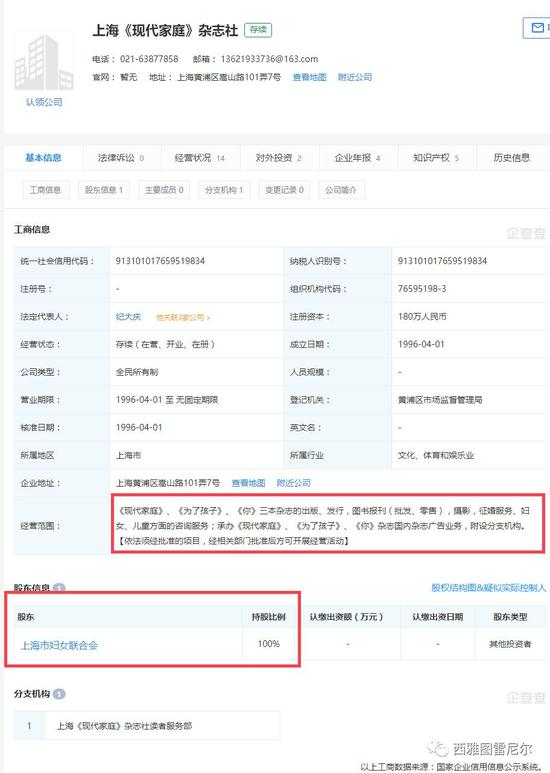
（上海市妇女联合会全资子公司，经营范围：完全不包含学前教育服务。完全就是个杂志社）
法人纪大庆同志简介
纪大庆，中共党员，本科学历，副编审。现任现代家庭杂志社社长、总编、党支部书记等职务。
纪大庆主持杂志社工作期间，在经营上注重贯穿两条主线，努力增加收入，降低成本，完成上级下达的各项经济指标。围绕市妇联中心工作，承接各项活动，为社会服务，取得社会赞赏。作为班子主要负责人，工作中加强学习，率先垂范。重视单位内部管理，不断完善各项规章制度，落实党风廉政责任制和安全工作责任制；不断探索转型发展，致力于相关产业拓展。《现代家庭》《为了孩子》杂志连续获得华东地区优秀期刊和上海市著名商标等荣誉。
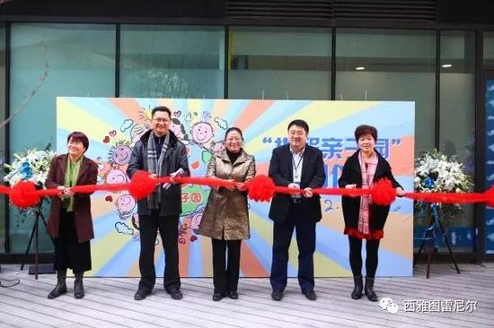
（纪大庆，就是那个围巾男。另外两个长宁区妇联主席和副主席）
那再看看这个“为了孩子学苑”的来头（即上海《现代家庭》杂志读者服务部）
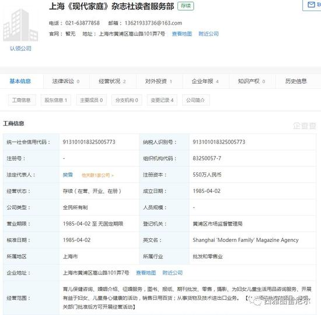
（“《现代家庭》杂志读者服务部”的经营范围，同样不包含学前教育）
育儿保健咨询、婚姻介绍、征婚服务，图书、报纸、期刊批发、零售，摄影、为妇女儿童生活用品咨询服务、开展有益于妇女、儿童身心健康的活动，销售日用百货；从事货物及技术进出口业务。
【依法须经批准的项目，经相关部门批准后方可开展经营活动】
（法人樊雪）
《为了孩子》创刊于1982年1月，由上海市妇联直属单位现代家庭杂志社出版，拥有广泛的读者群和良好的口碑，被认定为上海市著名商标。社长孙小琪为上海市妇联副主席。20多年来，《为了孩子》秉承权威、实用、亲切的风格，为年轻父母提供科学的育儿理念和实用的育儿方法，为国内外父母提供了一个贴心的交流平台，是年轻父母可信赖的育儿好帮手。
所以无论是《现代家庭》还是 “为了孩子学苑”都是没有资质的！
所以事情变得非常吊诡了：
因为携程没有学前教育的办学资质，然后被停业。
然后妇联推荐了一家同样【没有】资质的【政府关联企业】来办学，就可以了。
呵呵！
还有哪些幼儿园？
这里名单来自上海发布，数据来源于上海市总工会：
第一批试点“职工亲子工作室”（12家）
沪江教育科技（上海）股份有限公司亲子工作室
携程旅游网络技术（上海）有限公司亲子工作室
上海盈达空调设备股份有限公司亲子工作室
上海鹰峰电子科技股份有限公司亲子工作室
上海出入境检验检疫局亲子工作室
上海人本集团有限公司亲子工作室
上海柴油机股份有限公司亲子工作室
江南造船厂亲子工作室
中国电信上海公司西区局亲子工作室
光明集团海丰社区海丰办事处亲子工作室
中山医院亲子工作室
瑞金医院亲子工作室
第二批试点“职工亲子工作室”（47家）
上海天马微电子有限公司职工亲子工作室（浦东新区总工会）
上海市张江高科技园区张江园区总工会职工亲子工作室（浦东新区总工会）
上海百事通信息技术股份有限公司职工亲子工作室（徐汇区总工会）
上海新长宁慧生活科技有限公司职工亲子工作室（长宁区总工会）
长宁区教育局会计结算中心职工亲子工作室（长宁区总工会）
长宁区教育事务管理中心长宁教育企业总公司职工亲子工作室（长宁区总工会）
普陀区真如镇街道机关工会职工亲子工作室（普陀区总工会）
普陀区长征工业园区职工亲子工作室（普陀区总工会）
上海易所试网络信息技术股份有限公司职工亲子工作室（虹口区总工会）
上海复大医院职工亲子工作室（虹口区总工会）
上海市第四人民医院职工亲子工作室（虹口区总工会）
杨浦区机关党工委职工亲子工作室（杨浦区总工会）
黄浦区萤火虫亲子悦读馆五里桥馆职工亲子工作室（黄浦区总工会）
静安区江宁路街道职工亲子工作室博润工作点（静安区总工会）
静安区石门二路街道职工亲子工作室馨哈工作点（静安区总工会）
静安区市北高新园区职工亲子工作室（静安区总工会）
宝山区电视台职工亲子工作室（宝山区总工会）
上海至纯洁净系统科技股份有限公司职工亲子工作室（闵行区总工会）
上海敏众投资管理公司职工亲子工作室（闵行区总工会）
闵行区古美社区卫生服务中心职工亲子工作室（闵行区总工会）
上海金融谷职工亲子工作室（嘉定区总工会）
金山工业区鑫港湾职工亲子工作室（金山区总工会）
上海庆益鞋业有限公司职工亲子工作室（松江区总工会）
富士康松江科技工业园职工亲子工作室（松江区总工会）
上海市松江区东明商业广场联合工会职工亲子工作室（松江区总工会）
上海市公安局青浦分局职工亲子工作室（青浦区总工会）
上海田强环保科技股份有限公司职工亲子工作室（奉贤区总工会）
上海天阳钢管有限公司职工亲子工作室（奉贤区总工会）
上海奉贤巴士公共交通有限公司职工亲子工作室（奉贤区总工会）
上海纳海针织制衣有限公司职工亲子工作室 （崇明区总工会）
崇明区群团综合服务站长兴点职工亲子工作室（崇明区总工会）
上海纺织博物馆职工亲子工作室（纺织工会）
上海航天局805研究所职工亲子工作室（航天局工会）
上海航天局职工亲子工作室（航天局工会）
上海航天设备制造总厂职工亲子工作室（航天局工会）
上海电信理想信息产业（集团）有限公司职工亲子工作室（电信集团工会）
民航华东地区管理局职工亲子工作室（民航工会华东地区管理局委员会）
上海交通大学医学院附属仁济医院职工亲子工作室（医务工会）
上海广播电视台总部职工亲子工作室（上海广播电视台工会）
中国航发商用航空发动机有限责任公司职工亲子工作室（市经济和信息化工作系统工会）
光明集团海丰社区川东办事处职工亲子工作室（光明食品（集团）工会）
光明集团海丰社区上农办事处职工亲子工作室（光明食品（集团）工会）
光明集团种业职工亲子工作室（光明食品（集团）工会）
上海市第一中级人民法院职工亲子工作室（市级机关工会）
上海市高级人民法院职工亲子工作室（市级机关工会）
上海市质量技术监督局职工亲子工作室（市级机关工会）
上海新昇半导体科技有限公司职工亲子工作室（临港产业区工会）
（资料：市总工会）
......
再问亲子园事件
是否存在利益输送？
这样一家毫无资质的机构是如何承接下职工托儿所的？？
妇联为什么没有回避推荐自己的关联公司？
里面是不是存在着利益输送和权力寻租？
纪委同志，有活干了！
......
以前我一直觉得妇联啊，这种属于摆设的清水衙门。
现在看来还是我太年轻了。
纪委的同志们，拜托了！
（编程随想注：居然指望“纪委”能彻查？不得不说，这篇文章的作者依然太年轻）
《我也来八一八携程亲子园 @ 墙外楼》
（编程随想注：以下是此文节选，粗体是俺标注滴）
在携程亲子园没有开园前，朋友转发招聘信息，当时我正好刚从公办幼儿园离职，想说去试试看吧！
应聘地点在杂志社不说，去了之后给他们看了我的履历，我是学前教育本科毕业，加中级育婴师，6年幼教经验，也当过教研组长。
当时想应聘管理岗位，但是被杂志社无情拒绝，问我要不要做老师。我问工资多少，上班时长。他们回复从早上携程员工上班前把孩子送来开始，到员工下班结束把孩子接走。工资是三千块左右吧，具体忘记了，反正低的吓人。如果想要高的工资，就要多上课。和外面机构无差，但工资更低，所谓的多上课也是不确定的，随口说说的。
聊到后面，杂志社就说了，他们是妇联下面的，这个“为了孩子学苑”是他们下面的。也就是压根不存在第三方，所谓的这些公司也好杂志社也好，其实都是妇联的。他们也不在乎老师到底有没有教师资格证——有就最好，没有，也可以做这份工作。
当时和我应聘的还有两个人，都是非专业，一个还好点，有育婴师，另一个完全不懂的，但或许能够接受这样的工资。所以他们这就是在瞎搞，根本不是为了孩子好好找老师！专业的老师他们根本不肯花钱请，只想着人力成本降到最低。这如何保证保教质量？！
而且他们当时言语里就说了，他们没有办学许可证，但是却很斩钉截铁的告诉我可以来上班。教育局规定，按照道理来说教育机构都需要办理办学许可证，都需要进行备案，消防必须通过教育消防。这些亲子园有吗？
再说说这个所谓的“园长”，履历明显有问题的，合规的幼儿园根本没有教学主管一说。按等级就是教师—教研组长—年级主任—大教研组长—保教主任—副园长—园长。而曝光的履历里显示的她做过某机构的园长，根本就不算的，仅仅是一个职位而已。正规的园长是需要教育局任命的，有委任书的，她有吗？所以，这里面猫腻太大了！
《携程亲子园虐童背后最该道歉的难道不是上海妇联？ @ 网易》
（编程随想注：以下是此文节选，粗体是俺标注滴）
愤怒过后，我想说的是，携程在这件事上有不可推卸的监管失责，但最难辞其咎的，难道不是妇联吗？
因为，只要大家再去网上搜索下，你就会发现，携程亲子园的这个第三方托管机构是《现代家庭》杂志社旗下的“为了孩子学苑”早教机构。而《现代家庭》杂志社是上海妇联旗下直属单位，系由上海妇联全资。
都说城市套路深，呵呵。真是不由得你不信。于是我去天眼查去看了下，果不其然啊！新京报也很迅速的扒了出来。
赶集网上搜到的3月份的现代家庭杂质社的招聘信息，正是为携程亲子园招聘保育老师。看看这工资待遇，在魔都只有3000元不到。试问，这么低的工资，找到的老师会是专业的吗？
《携程副总裁施琦：虐童是长期行为 以后不与妇联合作 @ 新浪》
禾禾木：
三八红旗手张葆葆，名下8家公司 …拿着NGO的钱 (纳税人的钱或捐款)，用政府名义推荐企业采购自己项目，又用NGO的名义合理避税！
她和上海长宁区妇联是什么关系？
她丈夫是谁？
除了携程亲子园其他家的亲子园有无虐童事件？
这个女的已经是老惯犯，办立英语培训班卷款逃跑。
难道没有大V深挖吗？！
知乎问题：
如何评价携程亲子园虐童事件？
任易回答：
真相，就藏在为了孩子学苑负责人、锦霞儿童益智服务中心理事长、上海锦霞教育信息咨询有限公司创始人、上海童领企业管理有限公司董事长、宝贝创意谷创始人——张葆葆的身后。
月光博客：
携程幼儿园虐童事件的罪魁祸首是妇联。
携程几年前就筹办职工托儿所，被政府叫停；之后长宁区妇联向携程“推荐”了自己办的幼儿托管机构，携程托儿所才重新开张。
因此，事件的源头是妇联，妇联的负责人应该为这次恶性事件承担责任。http://t.cn/RljtP4T
刘沙沙：
这次上海妇联垄断幼儿园，虐待孩子这事儿，也是刷新了我的三观。我特么对中国这些权力机构收过路费的手段真的是佩服的五体投地。携程本来自己搞幼儿园，被妇联叫停了，说没牌照不许搞，然后妇联给塞进来个自己办的
https://t.co/Vw2c9t15wr
五岳散人：
看了看携程幼儿园虐童那事儿，虽说我公开怼过携程，但这次的锅还真不能全是携程背。
您看，携程想自己办幼儿园方便员工，算是员工福利的一种，结果没几天就因为没有资质而停了，然后就是找了个“第三方服务”。
这个服务是上海妇联下属某个杂志社的下属读者服务部的下属三产办的。
这事儿出来我就奇怪...
★中产阶级【强烈的】不安全感
程凌虚：
《作家天佑：我们的人生为什么会进入Hard模式？ @ 中国数字时代》
（编程随想注：这篇是对上面那条微博的有感而发）
首先，我要给很多同学解释一下什么叫做Hard模式，Hard模式这个术语这是从游戏中借鉴过来的。简单地说就是困难模式，对手比较强，难通关。跟这个Hard模式对应的，还有Easy模式，Normal模式。当然，Hard模式在游戏中也不是最难的，以后还有Very Hard模式以及Hell模式。那么，将人生和游戏中的模式作比较，这是近年来年轻人们对人生的反思。
一般来讲，年轻人觉得自己无限循环找不到出口时就会认为自己正处于人生的Hard模式。譬如，有人生病了，工资低、医保报不了多少、孩子还小、房子要供，他会认为自己处于Hard模式；有人认为自己无机会提升、找不到男朋友处于Hard模式；有人为了生活，不得不去前夫工作的单位工作，不知道怎么面对，觉得自己进入了修罗场；有人考研失败、无工作、父母身体健康成问题，自己一贫如洗有点痛苦
......
有人调侃说：生活在中国就是开启了Hard模式。在这种模式里，如果你不能加外挂，加加速，你很容易被切换到professional模式，甚至进入Hell模式。当富二代们都有飞行坐骑的时候，你如果幸运能够赚到点RMB还可以买好装备还可以改模式，如：投资移民去米国什么的，因为这样可降低游戏难度。可是，哪有那么容易？很多人打怪多年还是买不起坐骑，甚至有“加入party”这种被动技能也不行，这只能考验你的忍耐力。所以，很多时候，你只能自己对自己说：“就这样吧，路总是自己选择自己走的，谁也无法代替谁去承受。”因为你已经分不清楚，是自己太坚强，还是习惯性的认命。可是，你不论承受什么，第二天你还是肯定要微笑着出现的。但是你忘了，在中国，关服维护随时可能被关闭，你随时要做好下线准备。你不服？不服就会被强制返回出生点，甚至还会被关黑监狱，你咋滴？
我谈到这里，某些人还会觉得我天天写文章谈这个国家的问题是无事生非吗？还有人觉得自己不用关心政治吗？人是有趋利避害的本能的。为什么那么多优秀的人选择出国发展？他们不是傻子的。所以，当人家转到美服欧服，你只是在广播里刷了一句”太王八蛋了”就转入躲猫猫、喝凉水模式，你以后过上Hell模式的生活那是活该！
《蕨代霜蛟：携程、妇联。响当当的牌子、烂渣渣的作为。WHY？ @ 墙外楼》
要知道这个幼儿园非同一般，原本必须是内部老员工外籍员工KPI表现不错的员工才能享用的特权，也就是相当premium的配置、会令许多局外人都羡慕的育儿场所。结果做出这样的事情。这就唯有绝乎想象、目瞪口呆了——因为在一个物欲横流金钱至上的社会里，按理说我通过金钱或者渠道运作，绞尽脑汁挤进了特权领域的话，那品质肯定是毋庸置疑了吧？嗯，这种一分钱一分货的思维模式非常自然十分符合直觉合乎常理。然而事实却证明错到了西天之外。相反，草根社区里某些平凡粗糙的幼儿园里倒也未必令幼童经历过梦魇事件。
这个状况、细思恐极：这个社会什么都要钱、什么都谈钱。但真的有钱或者有渠道就能高枕无忧了吗？没有任何保证！
......
走在上海市中心街头、常常会看到一些历史悠久的老店铺子如乔家栅、杏花楼等等、都是童年记忆中美食的代表。然而现在你再走进去买点什么吃吃试试看？难吃得一逼。何以如此？理由和携程亲子园完全一样：点心柜台背后是一整套体系和制度，很多环节不是掉链子就是幺蛾子，最后的东西怎么会好？
儿时为什么觉得那么好吃？并非儿时那些背后的东西就做得好了，而是儿时能吃到的都是那一套出来的东西，感觉不到罢了。等到西方体系那套点心过来一比，味觉就让你崩溃了。这就是为什么今天你在长途车站火车站里麦当劳肯德基会让你觉得比其他餐馆安心得多、就是这个道理。
携程创始人梁建章：
（携程）公司的中高层，现在基本上是没有安全感的，小孩都往外（美国）送，自己能弄一个护照去弄一个护照。
当然特别穷的人顾不上这个，他们能在上海买个房就好。
中国的学校、教育、医院、空气，都没有（美国）那么好。
（某不知名网友）：
携程事件，很像杭州保姆纵火案的另一个版本，都狠狠撞到了一线中产的焦虑感上。
作为安全感最弱的阶层，房产、子女、医疗、教育、食品、养老都是不安全感外延的痛点。
这两年的百度魏则西事件、常州外语学校毒操场、山东疫苗案、杭州保姆纵火案、携程亲子园，无一例外。
（某不知名网友）：
朋友圈看了携程亲子园的事情，有点震惊。
最震惊我的部分不是虐待过程有多么残忍，而是有多么难以发现孩子被虐待。
如果不留下任何外伤，或没有监控佐证，恐怕永远也不知道小孩遭受了什么。
这是比人肉炸弹更恐怖的恐怖主义，同时也是你国的日常。
这些孩子都会长大，若无其事的长大。
倪妮不是我：
携程幼儿园这事儿一出来，又有一群人装外宾了，好像某国从来没有虐童、三聚氰胺、地震豆腐渣的事情似的。
岁月静好的中产们，出来走两步啊。
什么坏事都轮不到你头上，因为你姓赵对吧？
Lebutong：
给你国人中产写首歌：
常怀感恩岁月静好，升旗阅兵热泪盈眶；
身后有个强大祖国，勿负时代享受人生：
北上广深远超欧美，一线城市直追日韩；
九九六是勤劳致富，奴隶论乃挑拨离间。
奶粉有毒我去海淘，疫苗过期仅限农村；
虐童就上国际学校，保姆顽劣可请菲佣；
晋宁泸州地处偏僻，领导先走那是当年……
★关于“天朝”和“中国梦”
Sephiroth：
托儿所给你孩子喂安眠药
幼儿园给你孩子喂芥末
上学给你孩子喂“各种先进思想”
出来工作给你孩子喂“借债啃老必须买房”
而立之年给家喂“必须油腻的生个二胎三胎”
干不动了给你喂“延后退休，站岗干到死”
到老了给你喂“养老不能靠政府”
一辈子发现做了个别人给你喂的梦，这就是在圈里等着喂的国人！
Jian Alan Huang：
贵支的幼儿园虐待儿童是很有必要的。
生在贵支的小朋友从幼儿园就开始被虐，这样长大以后才能更快更好地适应社会。
为了不让孩子输在起跑线上，强烈建议贵支父母把小朋友送到携程幼儿园。
麒哥：
【活活弄死你】
教育弄不穷你，医疗弄；
医疗弄不穷你，房贷弄；
房贷弄不穷你，车贷弄；
车贷弄不穷你，加税弄；
加税弄不穷你，通胀弄；
通胀弄不穷你，养老弄；
养老弄不穷你，放开二胎弄；
放开二胎弄不穷你，退休继续交费弄；
继续交费弄不穷你，死后墓地高价弄。
目的只有一个，永远不让你有闲钱。
响马：
携程幼儿园这事是这国最让我失望的一件事情，没有之一。
不抱任何希望了，失望透顶，不再说。
★又见真理部
市府新闻办网络新闻管理处：
1，关闭携程亲子园事件新闻报道的跟评包括微博微信。没有新的公开回应前，不再报道或者转发报道。
2，近日，云南省楚雄州中级人民法院将对云南迪庆州香格里拉市村民与四川甘孜州乡城县村民因边界资源纠纷引发冲突进行二审宣判，关于此案，网站及新媒体不采访，不报道，不评论，不转载境外消息。
3，涉携程亲子园虐童事件，客户端，不得再Push，相关信息撤到三屏以后。对妇联就携程亲子园的回复，管好跟评，对攻击性的评论及时删除。
2017年11月10日
蓝一枚：
@携程旅行网 你是怎么做到“在微信说携程虐童只有自己能看到”这个事儿的。
@午后狂睡_Silent 你觉得呢？真这么牛逼？？
鲁特：
携程幼儿园的事居然还封杀，微博上不了热搜很正常，知乎居然都删帖。
全国经济最发达的地方出了这种事都想压下去，妇联什么时候这么牛b了？
吃枣药丸
Her peirong：
可见，携程当时对和妇联的合作是满意和充分信任的。当时多信任，现在就多恐怖！
所以小粉红爱党爱国，不是坏事。携程幼儿园事件告诉我们，党妈专坑信任它的人。这点初心，党妈从未遗忘，一直坚守！
★事后处理——找几个小人物背锅
《携程内部信通报虐童案进展——主要责任人已被刑拘 @ 新浪》
11月14日携程针对内部信全文如下：
1.周末期间，项目组已经一对一的形式继续陪同家长及孩子进行体检及心理咨询。目前，经过体检和心理咨询的孩子和家长已有98人次。携程法务部分已经与多家在儿童侵害等方面有丰富经验的法律援助机构取得联系，将为员工增加法律援助及诉讼方面的支持。
2.11月13日，园方主要责任人郑某（女）已经被警方刑拘。
3.同时启动对此事件相关责任人的内审调查。目前，施琦（前人力资源副总裁）、冯卫华（现任人力资源副总裁）已停职接受调查。庄宇翔担任HR临时负责人。
根据网络资料显示，1994 年从上海交通大学材料专业毕业后，施琦曾先后在上海创新房产公司、万豪顿（亚太）有限公司、葛兰素威康制药集团工作。其于2000 年3 月加入了当时还只有30 多人的携程，此后十余年大部分时间从事管理岗位，为携程元老级人物之一。
（编程随想注：携程内部处罚了一些人，算是有个交代。至于【上海市妇联】，当然是毫发未伤，继续开亲子园，继续赚黑心钱）
★讽刺文章
《龅牙赵：水泊梁山办了个托儿所 @ 中国数字时代》
（编程随想注：此文源发于微信，已经被疼逊管理员和谐掉了）
01
忠义堂排定座次之后，天罡地煞108位好汉在梁山聚齐，一片欣欣向荣。众好汉连同手下兵卒整日里替天行道东征西讨，大碗喝酒大口吃肉，忙得不亦乐乎。
不一日，宋江正在和李逵喝酒吃鱼，兄弟宋清走了进来，说：“哥哥，适才兄弟四处闲逛，发现马军关胜林冲等人联手办了一个托儿所，专门帮手下弟兄看管孩子，每个孩子一个月收二钱银子，说是要帮手下弟兄解决后顾之忧，倒是一个生财之道啊！”
宋江眉头一皱，问：“二钱银子，马军弟兄们愿意出这笔钱吗？”
宋清点点头说：“愿意，当然愿意。弟兄们都说，把孩子交给自家哥哥看着，花费也不多，比交给外人放心多了。这样一来，弟兄们可以安心操练征战，家眷们也能安心浆洗缝补，大家伙都觉得关头领想了个好主意。”
李逵放下酒杯，说：“这事儿不错啊，我们步军也搞一个。”
宋江眼睛一瞪，说：“你这黑厮，懂什么？”
02
第二天一大早，宋江带着吴用、李逵、宋清等人来到了马军托儿所，果然见着一帮老妈子小寡妇领着百十个孩童玩耍读书。
李逵大喊一声：“这里负责人是谁啊？”
朱仝听到喊声，慌里慌张从房内冲了出来，说：“几位哥哥，我们马军几个头领商量，说我在沧州帮知府带过孩子，算是有工作经验，让我暂时先在这里照应着。事起仓促，没来得及禀明哥哥，请哥哥莫怪。”
宋江看着朱仝，缓缓地说：“你们这个主意挺不错，不过，这样搞不行的。”
朱仝大惊失色，问：“请哥哥明示。”
宋江捋了捋胡子，说：“你们是作战部队，没有办托儿所的资格啊，再说了，你当年在沧州，把知府的孩子带死了，这是重大安全问题，怎么能让你来负责呢？”
朱仝指着李逵说：“哥哥明鉴，孩子是被黑旋风杀的！”
宋江微微一笑，李逵一瞪眼，朱仝正不知如何是好，宋清揽着他的胳膊说：“别慌，哥哥自有计较。”
03
当天下午，宋江召集马军、步军、水军等头领聚齐。宋江清了清嗓子，说：“今天我去看了看马军自己搞的托儿所，主意挺不错，但是，马军搞托儿所，有点不务正业了。而且，你们选的负责人、老妈子、教授都不太专业，我看，这个托儿所，有很大的问题。”
关胜、林冲等人一阵紧张，站起来正要说话，宋江抬抬手让他们坐下，接着说：“我看不如这样，托儿所这个事情呢，就交给梁山统一管理，不但马军要搞起来，步军和水军也要搞起来，分别就叫马军托儿所、步军托儿所、水军托儿所。场地，大家自己找，至于其他事情，各位头领就不要操心了。”
话音刚落，宋清就站了起来，宣布了梁山托儿所的管理机构。
总负责人：宋清；住宿安排：顾大嫂；饮食安排：孙二娘；保姆安排：扈三娘。
底下一阵窃窃私语，这些人都是宋江的亲信，其他人倒也不说了，孙二娘一个卖人肉包子的来负责孩子们的饮食，恐怕有点瘆人。
但是既然宋江这样安排了，大家也没什么其他言语，听命就是了。
04
没过多久，不断有军士向自己的头领反映，说孩子在托儿所出现了各种乱象，不知道是什么原因。
有的孩子回家之后一直哭，问什么都不回答，身上还有伤痕；
有的孩子一直生病，发烧拉肚什么都有，还老也治不好，安道全先生的药都不管用。
头领们不表态，军士们正好自己到托儿所去问，发现以前照看孩子的老妈子小寡妇都换了不认识的人，问两句还凶巴巴的不给好脸。
军士们怕惹恼了这些老妈子，自己的孩子在托儿所受欺负，又不敢明说，只能悄悄到托儿所来偷看。这一看不得了，原来这些新来的老妈子小寡妇，下手狠得很。
孩子不听话，又打又骂还给嘴里灌辛辣的姜蒜水；吃的住的，都比以前降了几个档次。
孩子们哪儿是来解决后顾之忧了，分明就是来吃苦受罪了。
05
这一传十十传百，很多人都知道其中的奥妙了。
原来宋江借口大家伙没有办托儿所的资格，把托儿所放到梁山统一管理，就是为了捞钱。名义上，这儿还是马军托儿所，实际上马军的头领根本说不上话。
宋江把所有掌权的负责人都换成自己的亲信，虽然还是让大家伙儿每个月交二钱银子，但是吃的、穿的、睡的、盖的都比以前差了不少。就单凭这几项，宋江和宋清就能挣一半。
更狠的是，以前的老妈子小寡妇都是大家伙儿自己找的信得过的人，轻手轻脚慈眉善目的，对孩子还算友善。
现在扈三娘觉得以前的保姆工资太高，把她们全部赶走，重新找了一批粗手大脚的农妇来带孩子。就这一招，又节约了不少开销。
关键是，这些托儿所，名义上还是叫马军托儿所、步军托儿所、水军托儿所，军士们只能找各自的头领来做主。
06
军士们又发现一个尴尬的问题，自己的头领不帮自己做主了，还让自己顾全大局，说宋江大哥很重视这件事，说那几个打孩子的保姆已经赶出梁山了。
军士们的想着自己的孩子花钱买罪受，当然不乐意，就要准备起来闹事。
结果很快就被头领一番话给吓了回来：“你还想不想在梁山干下去了？你去投降官府，他们要你吗？你去投靠田虎，你有投名状吗？你去投靠方腊，你会说南方话吗？”
军士们还想说话，头领们又劝慰道：“你们要相信宋江大哥，回去好好等消息，一定会给你们一个答复的。”
军士们这才明白，这些头领，要么是怕宋江，要么也在里面分了好处，根本就不会帮自己做主了。
没过多久，有消息说官军进攻梁山，大家伙忙着备战，渐渐也就把这件事忘了。
至于梁山托儿所，还办着，还是收这么多钱，还是这些人管着，只不过换了一批老妈子。
另外，还增加了一个保卫处，黑旋风李逵亲自来负责，再也不让人偷偷去门缝里看了……
★网友的其它评论
医生妈妈欧茜：
【孩子可能遭受虐待或冷暴力的简洁核查列表】
俺博客上，和本文相关的帖子（需翻墙）：
《每周转载：幼儿园集体服药事件和相关抗议活动（网文若干，照片多张）》
《每周转载：超级富豪王振华性侵9岁女童（大量网友评论，多图）》
《每周转载：汇总未成年人被性侵被嫖宿的案件（38起，附图）》
《点评中国社会九大阶层——没有公平、难以流动、无法稳定》
版权声明
本博客所有的原创文章，作者皆保留版权。转载必须包含本声明，保持本文完整，并以超链接形式注明作者编程随想和本文原始地址：
https://program-think.blogspot.com/2017/11/weekly-share-117.html
本博客所有的原创文章，作者皆保留版权。转载必须包含本声明，保持本文完整，并以超链接形式注明作者编程随想和本文原始地址：
https://program-think.blogspot.com/2017/11/weekly-share-117.html